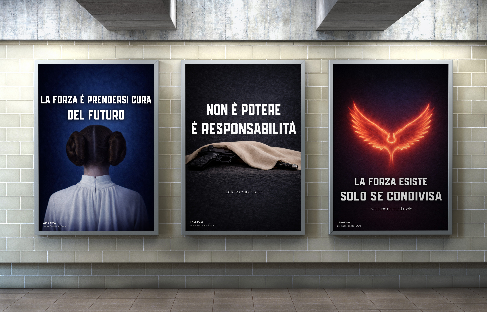
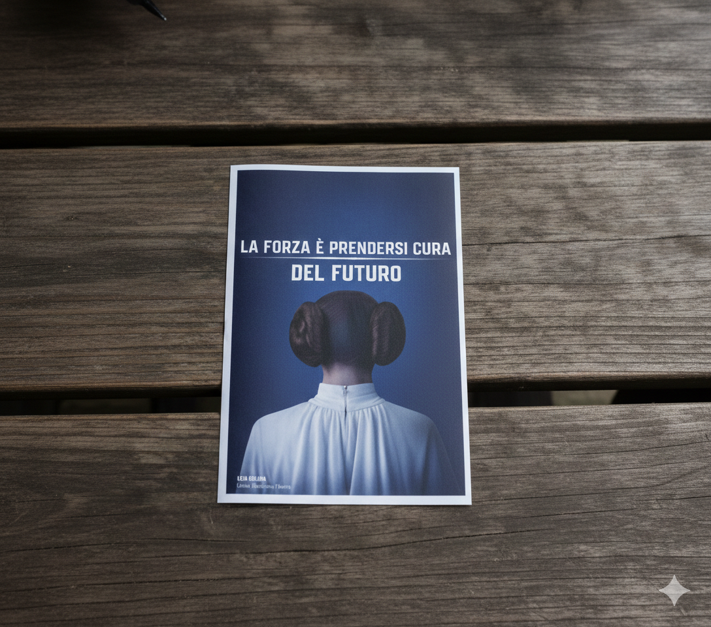
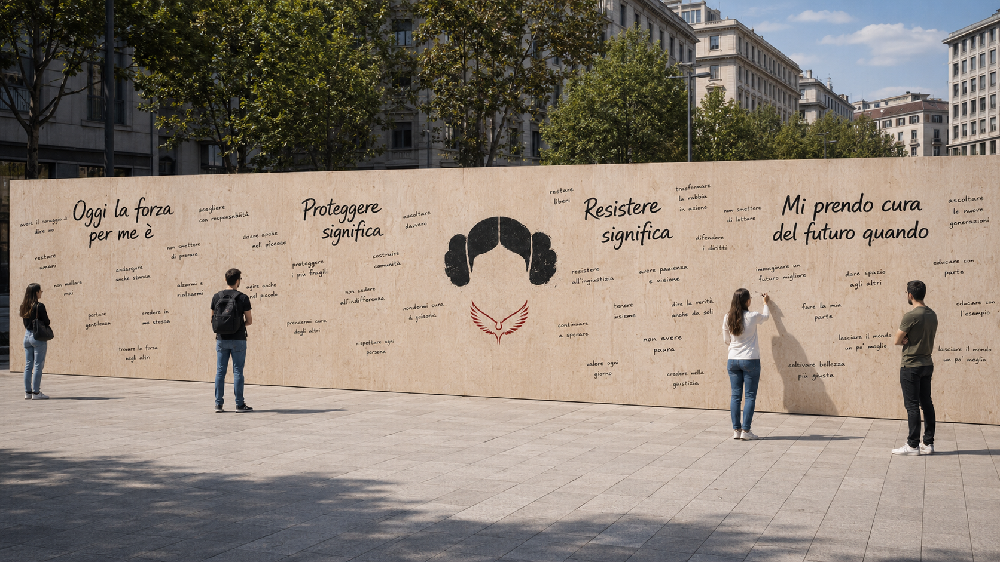
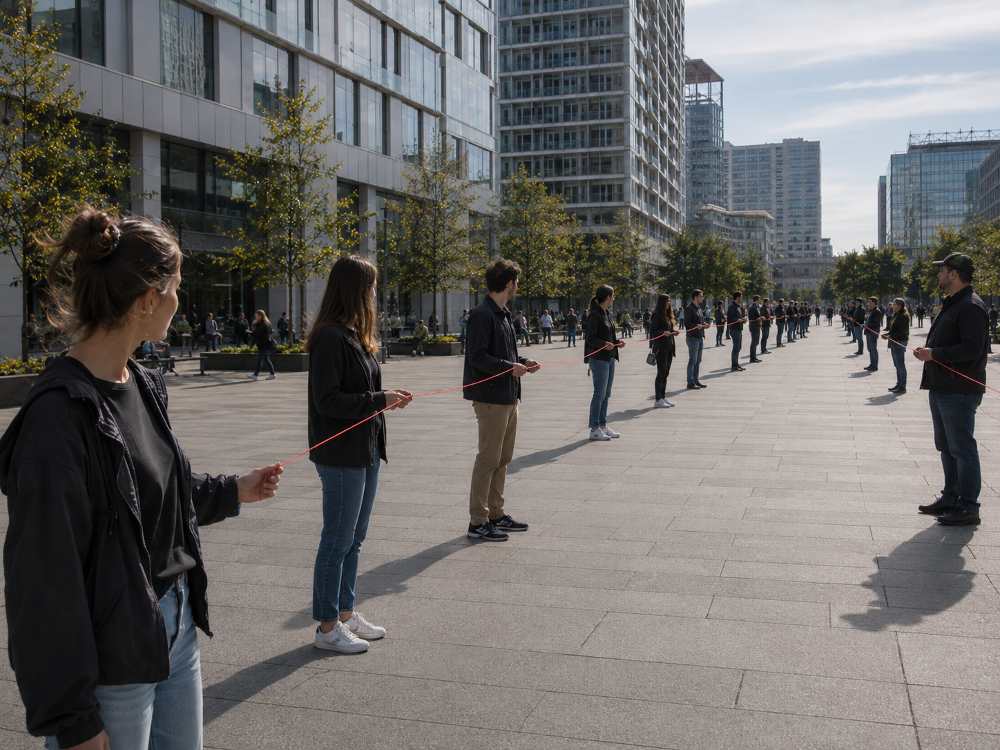

"La forza non è dominare. È prendersi cura del futuro."
Una campagna che reinterpreta Leia Organa come linguaggio culturale per ridefinire il concetto di forza nel presente.

Nell’immaginario contemporaneo, la forza viene spesso associata al dominio, alla guerra e al controllo. Il progetto propone invece una visione alternativa attraverso Leia Organa, che incarna una forza etica, politica e relazionale.
Pur essendo sensibile alla Forza e addestrata, Leia sceglie di non fondare su di essa la propria identità. La sua forza si esprime attraverso lucidità, intelletto, disciplina, leadership e responsabilità verso gli altri, trasformando il potere in cura e impegno.
La campagna trasforma Leia Organa da icona narrativa a modello concreto di forza etica. Invita le persone a riconoscere la forza non nello scontro o nel potere distruttivo, ma nella responsabilità condivisa, nella cura e nella capacità di costruire il futuro.
Il posizionamento propone quindi un’idea di forza collettiva, alternativa all’eroismo individuale e alla violenza intesa come soluzione. Il tono di voce è lucido, politico e inclusivo: calmo, ma fermo e determinato.
Non un'immagine singola, ma un sistema multi-soggetto coerente, in cui ogni visual esplora una declinazione della forza come responsabilità. Leia Organa non appare mai come ritratto: è nel gesto, nella rinuncia, nel simbolo.
Il sistema visivo adotta un linguaggio essenziale, simbolico e misurato, lontano sia dall’enfasi spettacolare sia dall’estetica nostalgica di Star Wars.
Le composizioni sono pulite, costruite attraverso spazio negativo, equilibrio e sottrazione. Non compaiono riferimenti diretti al franchise.
Oggi la forza è associata a potere, scontro, violenza e produce frustrazione e impotenza.
Entra Leia, non come personaggio ma come linguaggio culturale: possiede potere, ma non lo usa come dominio.
La forza diventa cura, scelta, collettività. Non lo si spiega: lo si fa vedere, dal verbale al visivo.
Il protagonista non è più Leia, ma il pubblico. La campagna non chiude il senso: invita a riconoscersi.
Volantini diffusi in città, università, eventi e mostre a tema.

L’installazione è un lungo muro partecipativo collocato in uno spazio pubblico. Le persone completano frasi aperte con azioni e impegni concreti. Nel tempo, il muro diventa un archivio collettivo che racconta la forza come responsabilità condivisa e costruzione comune.

L’azione urbana consiste in un filo rosso che attraversa progressivamente lo spazio pubblico. Una persona lo tiene per prima, poi altre si uniscono, creando una linea condivisa. Il gesto rende visibili connessione, responsabilità e continuità tra le persone.

I social media hanno funzione di connessione e apertura del discorso, non promozione, ma un luogo dove il pubblico è invitato a interrogarsi sul significato contemporaneo di forza, responsabilità e speranza, condividendo piccoli gesti quotidiani.